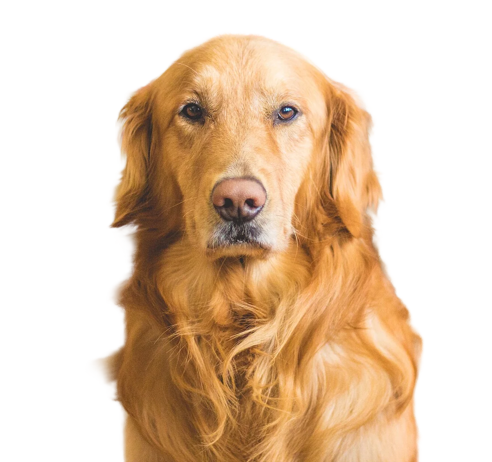
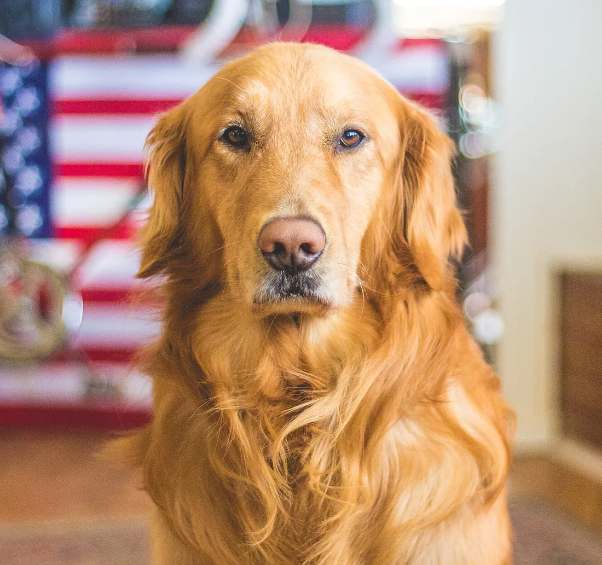

Free & open source · Windows 10 and 11Za darmo, open source · Windows 10 i 11
Clean cut-outs. Real alpha. Right on your PC.Czyste wycięcia. Prawdziwa przezroczystość. Na Twoim komputerze.
AlphaForge removes backgrounds with AI — down to individual hairs — then trims, pads, resizes, upscales, converts and compresses. One image or a hundred, in one pipeline. Nothing is ever uploaded.AlphaForge usuwa tło za pomocą AI — aż po pojedyncze włosy — a potem przycina, dodaje marginesy, zmienia rozmiar, powiększa, konwertuje i kompresuje. Jeden obraz albo sto, w jednym pipelinie. Nic nie jest wysyłane do sieci.
A hobby project, made with careProjekt hobbystyczny, robiony z sercem
AlphaForge is built after hours by one person — for fun, and because existing tools were either online-only, paid, or both. It is free and MIT-licensed: no ads, no subscriptions, no data collection. There is no company behind it and no warranty or guaranteed support, but bug reports and ideas on GitHub are very welcome.
AlphaForge powstaje po godzinach, tworzony przez jedną osobę — dla frajdy i dlatego, że istniejące narzędzia działały tylko online, były płatne albo jedno i drugie. Jest darmowy, na licencji MIT: bez reklam, subskrypcji i zbierania danych. Nie stoi za nim żadna firma, nie ma gwarancji ani zapewnionego wsparcia — ale zgłoszenia błędów i pomysły na GitHubie są bardzo mile widziane.
See the edgeZobacz krawędź
Fur stays fur. The background is really gone.Futro zostaje futrem. Tło naprawdę znika.
This is the Hair & fur model straight out of the app — no manual touch-ups. Soft edges get partial transparency instead of a jagged mask, and leftover background colour is removed from the strands, so the cut-out looks right on any colour.
To model Włosy i sierść prosto z aplikacji — bez ręcznych poprawek. Miękkie krawędzie dostają częściową przezroczystość zamiast poszarpanej maski, a resztki koloru tła są usuwane z kosmyków, więc wycięcie dobrze wygląda na każdym kolorze.
Drag the handle, then try a different background.
Przeciągnij uchwyt, a potem wypróbuj inne tło.


OriginalOryginałAlphaForgeAlphaForge
FeaturesFunkcje
Everything between “raw photo” and “ready to publish”Wszystko pomiędzy „surowym zdjęciem” a „gotowe do publikacji”
AI background removalUsuwanie tła z AI
Three BiRefNet models: Fast (built in, works offline), Best quality for products, people and cars, and Hair & fur for soft alpha. Shift, feather and harden the edge, remove stray specks.
Trzy modele BiRefNet: Szybki (wbudowany, działa offline), Najlepsza jakość dla produktów, ludzi i aut oraz Włosy i sierść dla miękkiej przezroczystości. Przesuwanie, wygładzanie i utwardzanie krawędzi, usuwanie drobnych plamek.
Refine by handRęczne poprawki
When AI guesses wrong, paint over it: Keep, Erase or Restore with an adjustable brush. Check the result with the before/after slider and on different backgrounds.
Gdy AI się pomyli, po prostu zamaluj: pędzel Zachowaj, Usuń lub Przywróć z regulowanym rozmiarem. Sprawdź efekt suwakiem przed/po i na różnych tłach.
Pipelines & presetsPipeline'y i presety
Chain steps into a pipeline, reorder them by dragging, switch them on and off, and save your own presets. Ten ready-made ones cover the usual jobs.
Łącz kroki w pipeline, zmieniaj ich kolejność przeciąganiem, włączaj i wyłączaj, zapisuj własne presety. Dziesięć gotowych obsługuje typowe zadania.
Batch processingPrzetwarzanie wsadowe
Drop files or whole folders and export everything with one click — optionally keeping the folder structure. A broken file never stops the batch, and you can cancel at any time.
Upuść pliki lub całe foldery i wyeksportuj wszystko jednym kliknięciem — opcjonalnie z zachowaniem struktury folderów. Uszkodzony plik nie zatrzymuje partii, a anulować można w każdej chwili.
AI upscale 2× / 4×Powiększanie AI 2× / 4×
Real-ESRGAN with three flavours: General (fast, with noise control), Photo (maximum detail) and Illustration for drawings and pixel-clean graphics.
Real-ESRGAN w trzech odmianach: Ogólny (szybki, z redukcją szumu), Zdjęcia (maksimum detali) i Ilustracje do rysunków i grafik.
Convert & compressKonwersja i kompresja
PNG (lossless optimisation or palette), JPG, WebP and AVIF. See the output size and savings live, before you export. You get a warning when a format can't keep transparency.
PNG (bezstratna optymalizacja lub paleta), JPG, WebP i AVIF. Rozmiar wyniku i oszczędność widać na żywo, jeszcze przed eksportem. Dostaniesz ostrzeżenie, gdy format nie zachowa przezroczystości.
Trim empty edges, add even padding or centre on a fixed canvas, resize by percent, width, height or aspect ratio — or use presets like 1024 × 1024 or a 1920 px hero.
Obcinaj puste krawędzie, dodawaj równe marginesy lub centruj na stałym płótnie, zmieniaj rozmiar procentowo, szerokością, wysokością lub proporcjami — albo użyj presetów, np. 1024 × 1024 czy baner 1920 px.
Fast on NVIDIA, works everywhereSzybki na NVIDIA, działa wszędzie
An optional one-click CUDA pack makes a cut-out take about half a second. Without an NVIDIA card everything still works on the CPU — just slower.
Opcjonalny pakiet CUDA instalowany jednym kliknięciem skraca wycinanie do około pół sekundy. Bez karty NVIDIA wszystko działa na procesorze — tylko wolniej.
The little thingsDrobiazgi, które cieszą
Paste screenshots with Ctrl+V, drag from Explorer, copy the result to the clipboard, zoom and pan, dark and light theme, open the output folder, reprocess. English and Polish UI.
Wklejanie zrzutów przez Ctrl+V, przeciąganie z Eksploratora, kopiowanie wyniku do schowka, zoom i przesuwanie, motyw ciemny i jasny, otwieranie folderu wyników, ponowne przetwarzanie. Interfejs po polsku i angielsku.
How it worksJak to działa
Pick a preset, tweak it, export everythingWybierz preset, dopasuj go, wyeksportuj wszystko
Every file goes through the same pipeline. The preview updates as you change settings, so you see the result before exporting.
Każdy plik przechodzi przez ten sam pipeline. Podgląd aktualizuje się przy każdej zmianie, więc wynik widać przed eksportem.
Remove backgroundUsuń tło
TrimPrzytnij
PaddingMargines
ResizeZmień rozmiar
UpscalePowiększ
Enhance & fillPopraw i wypełnij
PNG · JPG · WebP · AVIFPNG · JPG · WebP · AVIF
Built-in presetsWbudowane presety
Transparent AssetGrafika z przezroczystościącut-out with tight margins, PNGwycięcie z ciasnym marginesem, PNG
Web AssetGrafika na stronęcentred on 1024 × 1024, WebPwyśrodkowany na 1024 × 1024, WebP
CompressKompresjasame format, smaller fileten sam format, mniejszy plik
ScreenshotsZrzuty ekranu
A tool that looks like it belongs on your desktopNarzędzie, które dobrze wygląda na pulpicie
Click a screenshot to enlarge it. The screenshots follow the language you picked above.
Kliknij zrzut, aby go powiększyć. Zrzuty pokazują interfejs w wybranym powyżej języku.
Before/after slider on an arctic foxSuwak przed/po na lisie polarnymRefine mode: keep, erase or restore with a brushTryb poprawek: zachowaj, usuń lub przywróć pędzlemBatch export with the Web Asset presetEksport wsadowy z presetem Grafika na stronęLight theme, Product Photo presetJasny motyw, preset Zdjęcie produktuAI & GPU settings: models and the GPU packUstawienia AI i GPU: modele i pakiet GPUChoosing the background modelWybór modelu usuwania tła
PrivacyPrywatność
Your photos never leave your computerTwoje zdjęcia nie opuszczają komputera
“Processing happens locally on this computer. Images are not uploaded.”„Przetwarzanie odbywa się lokalnie na tym komputerze. Zdjęcia nie są nigdzie wysyłane.”
— the promise on the app's start screen and in its status bar. It holds by design, and the code is open, so you can check.
— obietnica z ekranu startowego i paska stanu aplikacji. Tak to zaprojektowano, a kod jest otwarty, więc możesz to sprawdzić.
No accounts, no telemetry, no analyticsBez kont, telemetrii i analitykiThe app doesn't phone home. There is nothing to sign in to.Aplikacja nic nie wysyła „do domu”. Nie ma się do czego logować.
Network only when you ask for itSieć tylko wtedy, gdy o to poprosiszThe internet is used only when you click to download an optional model or the GPU pack — from the official sources (Hugging Face, GitHub, NVIDIA), each file checked against a SHA-256 hash.Internet jest używany tylko po kliknięciu pobierania opcjonalnego modelu lub pakietu GPU — z oficjalnych źródeł (Hugging Face, GitHub, NVIDIA), a każdy plik jest sprawdzany sumą SHA-256.
Clean exportsCzyste pliki wynikoweExported images don't carry hidden metadata such as camera details or GPS location.Wyeksportowane obrazy nie niosą ukrytych metadanych, takich jak dane aparatu czy lokalizacja GPS.
Works offlineDziała offlineThe Fast model and all other tools are included in the installer.Model Szybki i wszystkie pozostałe narzędzia są w instalatorze.
PerformanceWydajność
How fast is it?Jak szybko to działa?
Measured on a mid-range gaming laptop (Ryzen 7 5800H, GeForce RTX 3060 Laptop 6 GB). Your numbers will differ — the CPU column is the honest worst case.
Pomiary na laptopie ze średniej półki (Ryzen 7 5800H, GeForce RTX 3060 Laptop 6 GB). U Ciebie wyniki będą inne — kolumna CPU to uczciwy najgorszy przypadek.
TaskZadanie
GPU
CPU
Remove background, FastUsuwanie tła, Szybki
0.25 s
3.6 s
Remove background, Best quality / Hair & furUsuwanie tła, Najlepsza jakość / Włosy i sierść
0.5 s
11 s
Upscale 4×, General (per input megapixel)Powiększanie 4×, Ogólny (na megapiksel wejścia)
Run the installerUruchom instalatorIt installs just for your user — no administrator rights needed. Microsoft WebView2 is added automatically if it's missing.Instaluje się tylko dla Twojego użytkownika — bez uprawnień administratora. Microsoft WebView2 zostanie doinstalowany, jeśli go brakuje.
If Windows SmartScreen appearsJeśli pojawi się Windows SmartScreenClick More info → Run anyway. The installer isn't code-signed — certificates cost money every year, which doesn't fit a free hobby project. You can verify the file instead (below).Kliknij Więcej informacji → Uruchom mimo to. Instalator nie jest podpisany cyfrowo — certyfikaty kosztują co roku, co nie pasuje do darmowego, hobbystycznego projektu. Zamiast tego możesz zweryfikować plik (poniżej).
Optional: speed it up on NVIDIAOpcjonalnie: przyspiesz na NVIDIASettings → AI & GPU → GPU acceleration pack → Install (one-time 1.46 GB download, driver 528 or newer), then restart the app. The larger models (424 MB and 844 MB) download from the same screen when you first need them.Ustawienia → AI i GPU → Pakiet akceleracji GPU → Zainstaluj (jednorazowo 1,46 GB, sterownik 528 lub nowszy), potem uruchom aplikację ponownie. Większe modele (424 MB i 844 MB) pobierzesz z tego samego ekranu, gdy będą potrzebne.
Verify the download (SHA-256)Zweryfikuj pobrany plik (SHA-256)
Is it really free? Can I use it for commercial work?Czy to naprawdę za darmo? Mogę używać tego komercyjnie?
Yes and yes. AlphaForge is MIT-licensed, and the AI models it uses are MIT (BiRefNet) and BSD-3-Clause (Real-ESRGAN) — both allow commercial use. Models with non-commercial licences were deliberately left out. The images you create are yours; just make sure you have the rights to the photos you put in.
Tak i tak. AlphaForge jest na licencji MIT, a używane modele AI są na licencjach MIT (BiRefNet) i BSD-3-Clause (Real-ESRGAN) — obie pozwalają na użytek komercyjny. Modele z licencjami niekomercyjnymi zostały celowo pominięte. Obrazy, które tworzysz, należą do Ciebie — upewnij się tylko, że masz prawa do zdjęć, które wrzucasz.
Do I need an NVIDIA graphics card?Czy potrzebuję karty graficznej NVIDIA?
No. Everything runs on the CPU too. An NVIDIA card with the optional GPU pack just makes AI steps 10–30× faster, which matters most for big batches and the larger models.
Nie. Wszystko działa także na procesorze. Karta NVIDIA z opcjonalnym pakietem GPU przyspiesza kroki AI 10–30 razy, co ma znaczenie głównie przy dużych partiach i większych modelach.
Does it work without the internet?Czy działa bez internetu?
Yes. After installation the Fast background model, upscaling and all the other tools work offline. You only need a connection to download the optional larger models or the GPU pack.
Tak. Po instalacji model Szybki, powiększanie i wszystkie pozostałe narzędzia działają offline. Połączenie jest potrzebne tylko do pobrania opcjonalnych większych modeli lub pakietu GPU.
Why does Windows warn me about the installer?Dlaczego Windows ostrzega przed instalatorem?
SmartScreen warns about any program that isn't signed with a paid code-signing certificate and hasn't been downloaded by many people yet. Click More info → Run anyway. If you want to be sure, compare the SHA-256 hash above with the one on the release page, or build the app yourself from source.
SmartScreen ostrzega przed każdym programem, który nie jest podpisany płatnym certyfikatem i nie był jeszcze pobierany przez wiele osób. Kliknij Więcej informacji → Uruchom mimo to. Jeśli chcesz mieć pewność, porównaj sumę SHA-256 powyżej z tą na stronie wydania albo zbuduj aplikację samodzielnie ze źródeł.
Where are my results saved?Gdzie zapisują się wyniki?
By default into an “AlphaForge” folder next to the originals. You can choose any folder, keep the source folder structure, add a prefix or suffix, and decide whether existing files get overwritten or renamed. The originals are never modified.
Domyślnie do folderu „AlphaForge” obok oryginałów. Możesz wybrać dowolny folder, zachować strukturę folderów źródłowych, dodać prefiks lub sufiks i zdecydować, czy istniejące pliki są nadpisywane, czy dostają nową nazwę. Oryginały nigdy nie są modyfikowane.
What about macOS or Linux?A macOS albo Linux?
Not at the moment — AlphaForge is built and tested on Windows only. The code is open, so a port isn't impossible, but there are no plans or promises.
Na razie nie — AlphaForge jest budowany i testowany tylko na Windowsie. Kod jest otwarty, więc port nie jest wykluczony, ale nie ma planów ani obietnic.
How do I uninstall it completely?Jak całkowicie odinstalować aplikację?
Uninstall it from Windows Settings → Apps. Downloaded models and the GPU pack live in %LOCALAPPDATA%\AlphaForge — remove them in the app (Settings → AI & GPU) first, or delete that folder afterwards.
Odinstaluj ją w Ustawieniach Windows → Aplikacje. Pobrane modele i pakiet GPU znajdują się w %LOCALAPPDATA%\AlphaForge — usuń je najpierw w aplikacji (Ustawienia → AI i GPU) albo skasuj ten folder po odinstalowaniu.
I found a bug / I have an ideaZnalazłem błąd / mam pomysł
Great — please open an issue on GitHub. It's a hobby project, so answers may take a while, but every report is read.
Super — zgłoś to w Issues na GitHubie. To projekt hobbystyczny, więc odpowiedź może chwilę potrwać, ale każde zgłoszenie jest czytane.
CreditsPodziękowania
Standing on the shoulders of giantsNa ramionach gigantów
AlphaForge is not affiliated with any of the projects below — it just uses their excellent, openly licensed work.
AlphaForge nie jest powiązany z żadnym z poniższych projektów — po prostu korzysta z ich świetnej, otwarcie licencjonowanej pracy.

.jpg){kind=link}
.jpg){kind=link}
.jpg){kind=link}
.jpg){kind=link}
.JPG){kind=link}